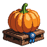
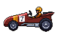
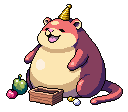

Slow Side Games
"Tamagotchi style" makes complete sense. Designers call it a nurture loop or virtual pet system, and more broadly slow side progression: something you feed, train or hand things to a little at a time, which grows far more slowly than your character, and which you show off. They work because they give a short reason to log in every day and a long reason to stay for months. Almost every long-running MMO has two or three. Below: what other games do, eight ideas built on what EastScape already has, two working demos, and my picks.
What other games do
The same handful of shapes turns up everywhere: train and race, grow and weigh, send out and wait, befriend, and fill a collection.
| Game | The system | The loop | What keeps it slow |
|---|---|---|---|
| Final Fantasy VII / XIV | Chocobo racing and breeding | Feed greens to raise speed and stamina, race at the Gold Saucer, breed better birds | Feeding limits, ranks, a bird's lineage |
| Uma Musume | Horse training | Pick a drill each "week", races at milestones | A fixed number of training turns, fatigue |
| Pokémon | Stat training, vitamins, the daycare | Feed items that each raise one hidden stat; breed for better ones | Caps per stat and in total |
| Old School RuneScape | Kingdom of Miscellania, birdhouse runs | Pay in to keep approval up, it gathers for you; put birdhouses out, collect hours later | Approval drains daily; real-time timers |
| RuneScape 3 | Player-owned ports, the farm | Send crewed ships on voyages for hours; raise animals to adult and breed them | Voyage length, crew levels, growth stages |
| World of Warcraft | Mission table, battle pets | Send followers on timed missions; level and battle pets | Timers; one mission slot each |
| Lost Ark | Rapport, the Stronghold | Give NPCs gifts and songs for trust levels; dispatch crew, research upgrades | Daily gift limits; research timers |
| Stardew Valley | Giant crops, hearts, fish ponds, the museum | Water daily, gift villagers, stock ponds, donate one of each | Seasons, one gift a day, rare finds |
| Animal Crossing | The museum, flower breeding | Donate every bug, fish and fossil; breed flower colours | Real-time days, rare spawns |
| Black Desert | Horse training and breeding | Ride to level a horse, it learns skills, breed up a tier | Huge XP curves, random skills |
| Monster Hunter Rise | The Argosy, buddy expeditions | Send traders and cat helpers out, they come back levelled with loot | Expeditions last a number of hunts |
| Neopets | The original virtual pet | Feed, train stats at a school, battle | Course timers, rising costs |
What makes them work
Five rules, from the ones that last and the ones that people quit:
Eight ideas for EastScape
Each is built on systems already in the game. "Size" is my rough guess at building it on dev.


My first pick
- The loop
- Every pet gets three race stats: Speed, Stamina, Nerve. Once a day, a drill at the Derby track raises one; a feed you cook makes it count for more.
- The stage
- A race every hour on a track at the Carnival: six lanes, empty lanes filled with house runners. Races go by class (Novice, Open, Champion, by a pet's total stats), so you always race pets near yours. Entry in tickets, prizes in tickets and rosettes.
- Slow because
- One drill a day; gains shrink as a stat climbs. A top runner is two or three months of dailies.
- Uses
- Pets, breeding (a fast mum and dad), Cooking (feeds), Mockup 7's pet levels (racing gives pet XP).
- Size
- About 4 days. Demo below.

Second
- The loop
- Plant one giant seed on your island. Each day: water it, feed it compost, pick the bugs off. It grows on a curve; how well you tend it sets how big it can get.
- The stage
- A weigh-in every Sunday in the Yard during the Long Night. The heaviest three win titles and a trophy for the island.
- Slow because
- One tending a day; a month to full size.
- Uses
- Islands, Farming, Fungiculture (compost), the Long Night.
- Size
- About 2 days. Demo below.

Third
- The loop
- Hire crew at Captain Claw's dock. Send a ship out for 2, 6 or 12 real hours; it comes back with loot from earlier maps. Crew level a little each voyage and pick up traits ("Lucky", "Navigator").
- The stage
- A treasure board: the best haul of the week.
- Slow because
- Real-time voyages; three ships at most.
- Uses
- The Boardwalk, its ships, MIX drops.
- Size
- About 3 days.

- The loop
- Build a kart from Tinkering parts: wheels, frame, steering. Upgrades take parts you salvage over weeks.
- The stage
- A weekly time trial down Thrill Hill against everyone's ghosts; a leaderboard with a title for first.
- Slow because
- Parts are rare; one upgrade a day.
- Uses
- Tinkering, Thrill Hill.
- Size
- About 5 days (it needs steering on the page).

- The loop
- One enormous creature lives in the Yard and the whole server feeds it. Every meal fills its bar; it grows a stage each week.
- The stage
- At each stage the whole server gets something: a 2X hour, a Beast Parade event, a hat for everyone who fed it.
- Slow because
- Weekly stages; it gets hungrier as it grows.
- Uses
- World events, CASINO's voice, every skill's output.
- Size
- About 2 days.

- The loop
- Bom, Nestor, Livia, Hexa, Bronny, Sal and Dale each like certain gifts. One gift a day each; hearts from 0 to 10.
- The stage
- Every heart is a line of their story; 5 hearts is a small discount, 10 a title and a cosmetic only they give.
- Slow because
- One gift a day per NPC; liked gifts are a puzzle to find.
- Uses
- NPCs, every skill's output, the diaries.
- Size
- About 3 days, mostly writing.

- The loop
- Put a live catch in a tank in your cottage. Feed it; it grows from Tiddler to Whopper and sometimes breeds.
- The stage
- Visitors see your tank; a Whopper of every kind is a collection log page.
- Slow because
- A size step every few days of feeding.
- Uses
- Fishing, islands, the collection log.
- Size
- About 3 days.

- The loop
- Hang seed feeders on four maps. Come back hours later: feathers, eggs, sometimes a rare bird's nest.
- The stage
- A "run" around four maps a couple of times a day: the lightest idea here.
- Slow because
- Real-time filling; better feeders need Woodcutting and Fletching.
- Uses
- Woodcutting, Fletching, Breeding (eggs).
- Size
- About 1.5 days.
The Pet Derby: try a week
Pick a pet, plan seven days of drills and feeds, then race it against five house runners. The numbers are a first pass; the shape is the point. Speed sets the pace, Stamina holds it in the last third, Nerve stops it stumbling at the crowd. A pet's own bonus gives it a head start (Lil' Crusher walks 10% faster, so it starts quick). Gains shrink as a stat climbs: a stat near 100 is about three months of dailies. The house runners here are about two weeks in, so a pet one week in is mid-pack. In the game, races go by class, so a pet always meets pets near its own level.
This week
The race
 The DerbyCarnival track
The DerbyCarnival trackNext race: 8:00 PM · entry 100 🎟 · 4 of 6 lanes taken
The Giant Pumpkin: how care shapes the curve
The pumpkin always grows, but how often you tend it sets how big it can get: the curve flattens at a ceiling that care raises. Missing a day never shrinks it. A month of daily care with compost is a champion; a pumpkin planted and forgotten is still a respectable pumpkin.
Crew voyages, in the game
The lightest touch of the three picks: send a ship out, come back later. A voyage's haul is decided when it sails (so a timer is the only thing stored), and crew earn a level every few voyages.
Captain Claw's dock3 of 3 ships
My picks, and the order
| # | Idea | Why | Size |
|---|---|---|---|
| 1 | The Pet Derby | Your idea, and the strongest: everyone has a pet, races are a show every hour, and it gives breeding a reason (fast parents). | ~4 days |
| 2 | The Giant Pumpkin | Cheap, seasonal, gives islands a daily reason; the Sunday weigh-in is a Yard event. | ~2 days |
| 3 | Crew voyages | For people with five minutes a day; uses the Boardwalk's ships and the MIX drops. | ~3 days |
| — | The Big Beast | If you want another all-server moment like the raids (they were the biggest hit). | ~2 days |
Nothing here is built. Concept art: the giant pumpkin, the soapbox kart and the Big Beast are PixelLab first drafts; everything else is the game's own art.